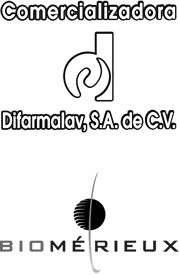
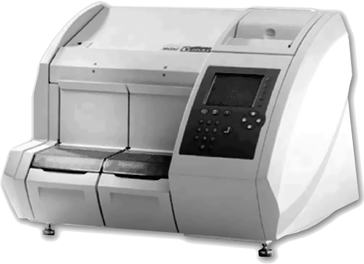

Minividas inmunología

DESCRIPCIÓN:
VIDAS es un equipo inmunoanalizador multiparamétrico con 5 secciones independientes, cada una con 6 posiciones, que permiten procesar varios parámetros simultáneamente.
El sistema VIDAS usa el principio de valoración ELFA asociado al método ELISA con una lectura de fluorescencia azul. Esta tecnología asegura una excelente sensibilidad y especificidad en los resultados.
Este concepto original evita todas las contaminaciones INTER-REACTIVO e INTER-MUESTRA. Además la ausencia de tubos, jeringas y agujas reduce el mantenimiento preventivo al mínimo.
REACTIVO:
El Test de VIDAS es un reactivo unitario y listo al empleo.
El cono sirve de fase sólida para la reacción y está recubierto con antígenos y anticuerpos.
El cartucho contiene todos los reactivos necesarios para la reacción.
Los reactivos VIDAS están precalibrados.
Las curvas de calibración se suministran para cada lote en forma de código de barra.
Solamente se requiere una recalibración cada 14 días usando un calibrador incluido en cada equipo de reactivos.
INSTRUCCIONES DE USO:
Después de cargar los reactivos en el sistema, simplemente presione la tecla “Iniciar” y los análisis serán procesados hasta la impresión de resultados.
DATOS COMPLEMENTARIOS: Para mayor información llamar a:
COMERCIALIZADORA DIFARMALAV, S.A. DE C.V.
Teléfonos: 01 222 594-3465, 755-3753, 755-3752
Lada sin costo: 01 800 DIFARMA, 01 800 161-6707
(01 800 343 2762)
e-mail: difarmaventas@hotmail.com
www.difarmalav.com.mx